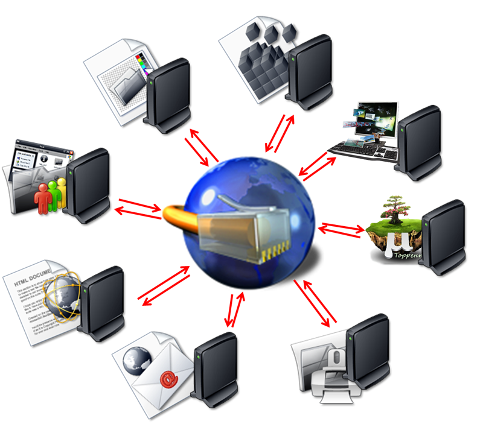

Modelos y Estructuras
Características, Estructuras y Modelos de los distintos tipos de Computación Distribuida

Compartir recursos remotos para realizar tareas, en vez de abordarlas desde un único centro de
trabajo, permite mayor seguridad, eficiencia y fiabilidad. Estas son las principales características
de los modelos de computación distribuida:
• Acceso remoto seguro a la información.
• Uso eficiente de los recursos.
• Redes de comunicación fiables.
• Estándares abiertos.
Aunque son muchas sus variantes, los tres principales modelos de computación distribuida son los que le mostramos a continuación:
Computación en la nube
Se trata de infraestructuras, servicios y plataformas escalables y accesibles por el usuario a través de Internet. Los modelos de computación en la nube son tres:• Software como Servicio (SaaS): en los que el cliente accede a aplicaciones como su ERP o CRM, y a infraestructuras, como servidores y almacenamiento.
• Plataforma como Servicio (PaaS): en este entorno basado en la nube se pueden desarrollar aplicaciones propias y personalizar parámetros.
• Infraestructura como Servicio (IaaS): los usuarios pueden acceder a infraestructuras técnicas, como servidores o cortafuegos.
Computación en malla
La computación en malla permite la creación de un superordenador virtual a partir de un grupo de ordenadores conectados. Este modelo suele emplearse para desarrollar procesos especialmente complejos, como proyectos científicos o códigos criptográficos. Computación en clúster Los clústeres son conjuntos de ordenadores individuales que combinan sus capacidades informáticas para realizar tareas de alto rendimiento, como automatización o big data.Computación en Cluster
Los clústeres son conjuntos de ordenadores individuales que combinan sus capacidades informáticas para realizar tareas de alto rendimiento, como automatización o big data.Estructura
Estos sistemas trabajan con el principio de los recursos combinados. Un sistema de computación distribuida usa el mismo concepto. Se comparte toda la carga a través de múltiples ordenadores para completar tareas de forma más eficiente y rápida. Es importante conocer cuáles son los recursos de un ordenador:• La unidad de procesador central (CPU): Realiza operaciones matemáticas y direcciona los datos a diferentes localizaciones de memoria. Puede haber más de una CPU en un equipo.
• Memoria: En general, es un tipo de almacenamiento electrónico temporal. Mantiene datos relevantes a mano para el microprocesador. Sin la memoria, el microprocesador tendría que buscar y recuperar datos de un dispositivo de almacenamiento más permanente, como el disco duro.
• Almacenamiento: En términos de computación distribuida, se refiere a los dispositivos de almacenamiento permanentes, como son los discos duros o bases de datos.
Ventajas y desventajas de la Computación Distribuida
Como ya sabrá, todos los avances en el campo de la digitalización son altamente beneficiosos para las empresas. Las principales ventajas son:• Economía: es mucho más barato añadir servidores y clientes cuando se requiere aumentar la potencia de procesamiento.
• Confiabilidad: si falla una máquina, no falla el sistema completo, solo esa máquina, porque la carga de trabajo está distribuida en todo el sistema, no en una sola máquina.
• Deslocalización: la computación distribuida permite conectar rápidamente entre entornos deslocalizados. Sería el caso de una red bancaria en la que cada oficina debe mantener las cuentas de sus clientes, pero también necesitan comunicarse entre sí para registrar operaciones.
• Velocidad: la necesidad de acelerar los cálculos más complejos se satisface dividiendo problemas grandes en pequeños fragmentos. Este enfoque permite que los usuarios puedan aumentar progresivamente la potencia de cálculo en función de sus necesidades.
• Recursos compartidos: las ventajas de compartir recursos son muchas, desde el acceso a dispositivos. remotos hasta el hecho de poder tener enormes bases de datos distribuidas en varias máquinas.
• Seguridad frente a fallos: un sistema en torno a un único nodo puede colapsar en caso de que el procesador falle. Sin embargo, en la computación distribuida, los procesadores verifican mutuamente los puntos de control
La computación distribuida, a pesar de sus grandes ventajas, presenta algunos inconvenientes que también hay que tener en cuenta al trabajar con ella:
• Enrutamiento: las infraestructuras distribuidas de recursos se encuentran en diferentes lugares, lo que complica el enrutamiento en la capa de red y en la capa de aplicación.
• Apertura: los protocolos estándar que permiten la interoperabilidad requieren tener interfaces bien definidas.
• Sincronización: la sincronización de cálculos divididos en miles de componentes con los métodos actuales puede ser insuficiente para sistemas complejos, tal como ocurre con la red de semáforos.